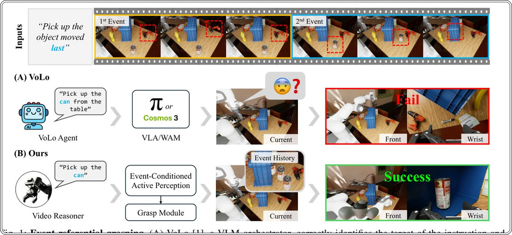
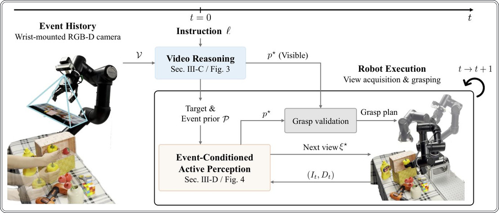
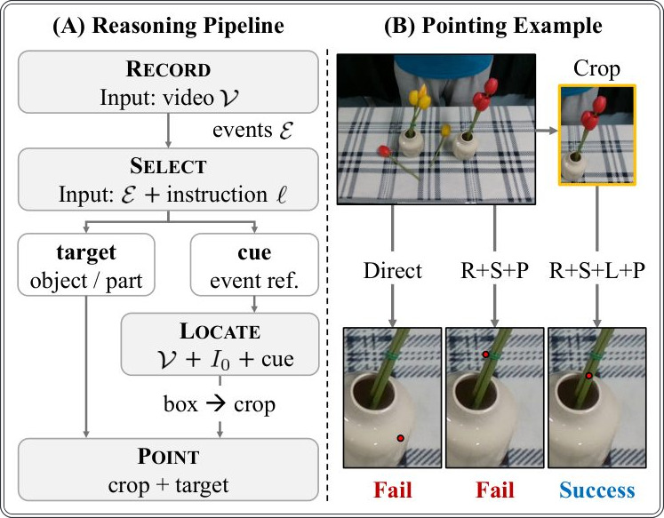
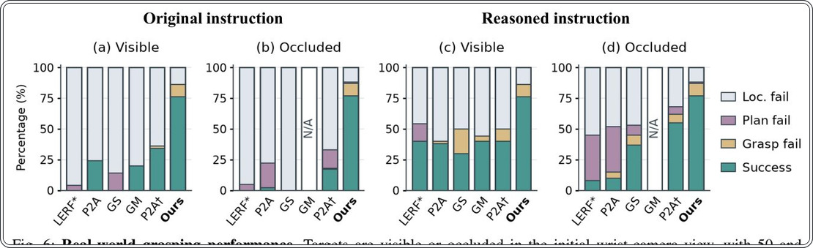
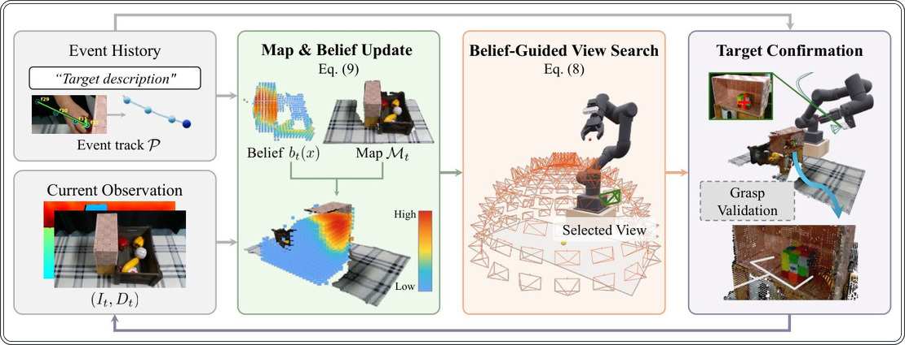
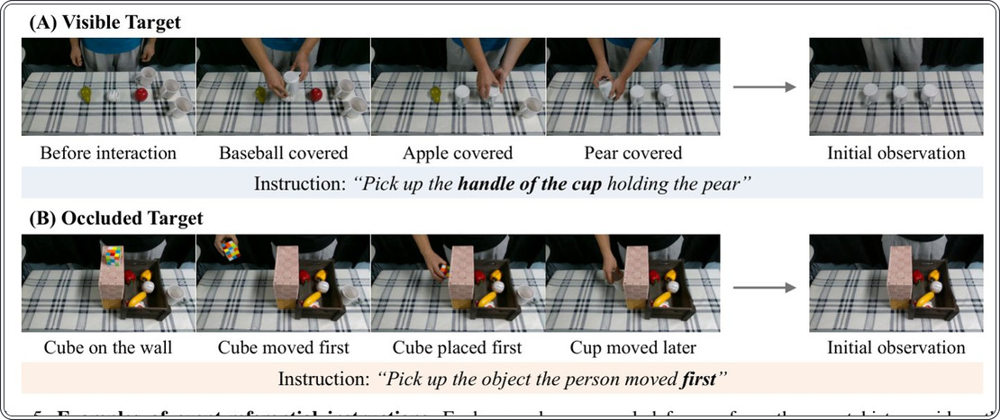
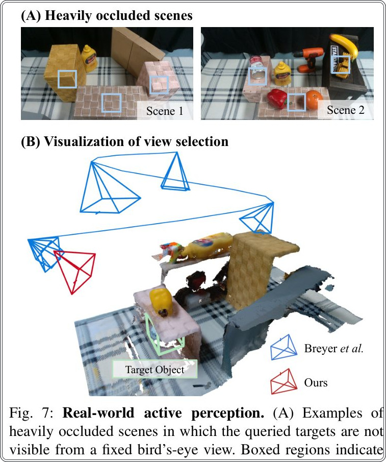
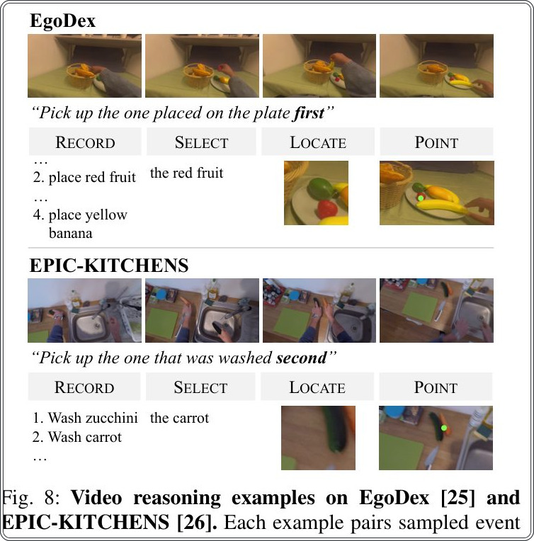

Робот, который помнит прошлое: как научить машину находить спрятанные предметы


Полное описание рисунка
Рис. 1: Захват на основе событий. (A) VoLo, оркестратор VLM, правильно идентифицирует цель инструкции и передает ее текстовое описание либо в VLA (π0.5), либо в WAM (Cosmos3-Nano-Policy). Тем не менее, обе последующие модели не могут локализовать и захватить скрытую цель. (B) Наша система вместо этого инициализирует пространственное представление на основе прошлых наблюдений, активно выбирает точку обзора, которая открывает цель, и успешно захватывает ее.
Исследователи представили систему BeyondSCe, которая помогает роботам находить объекты, основываясь на истории прошлых взаимодействий. Если нужная вещь скрыта от глаз, робот анализирует видеозапись событий и активно выбирает точки обзора для поиска. Технология не требует дообучения под конкретные задачи и работает с обычными RGB-D камерами.
Главное
- Успех захвата скрытых объектов вырос до 77% против 55% у лучших аналогов.
- Система сократила среднее число ракурсов для поиска с 3.35 до 2.20.
- Используются готовые предобученные модели без специализированного дообучения.
Подробнее
Система BeyondSCe использует комбинацию мультимодальных языковых моделей (MLLM) и алгоритмов отслеживания точек для интерпретации инструкций, связанных с прошлыми событиями. Когда пользователь просит робота взять предмет, который он «только что использовал», система анализирует историю видео, чтобы идентифицировать объект и его последнее известное местоположение. Если цель не видна в текущем кадре, робот создает вероятностную волюметрическую карту (объемную модель) пространства, объединяя данные из истории с геометрией текущей сцены.
Для поиска скрытого объекта робот применяет метод активного восприятия: он оценивает потенциальные точки обзора, учитывая прозрачность и видимость областей, чтобы минимизировать количество движений камеры. В экспериментах с манипулятором и установленной на запястье RGB-D камерой система достигла успеха в 77% случаев для скрытых объектов, что значительно выше показателей существующих аналогов. Метод эффективно сокращает количество необходимых для поиска ракурсов, оптимизируя процесс принятия решений в реальном времени.
Ограничения
Эффективность системы ограничена точностью отслеживания объектов на видео и качеством данных глубины, полученных с RGB-D камеры.
Подробный разбор статьи
Резюме
Роботизированные системы, взаимодействующие с людьми, должны обладать способностью выполнять запросы, основанные на прошлых событиях. Часто пользователь идентифицирует объект не по его названию или внешнему виду, а по роли, которую тот сыграл в недавнем действии. Более того, целевой объект может быть скрыт из поля зрения в момент подачи команды. Авторы представляют BeyondCSe — систему захвата объектов с нулевым обучением (zero-shot), предназначенную для работы в условиях событийной привязки. Система анализирует историю событий и текущую сцену, чтобы локализовать объект для захвата. Если цель скрыта, алгоритм объединяет априорные данные о событии с геометрией текущей сцены, выбирая оптимальные точки обзора для обнаружения объекта.
Важно
Система BeyondCSe достигает успеха в захвате объектов в 76% случаев для видимых целей и в 77% для скрытых, существенно превосходя базовые методы.
Система использует предобученные модели без дополнительного дообучения под конкретные задачи. В экспериментах с реальным роботом, оснащенным одним запястным RGB-D датчиком, BeyondCSe показала точность захвата 76% для видимых объектов и 77% для скрытых, тогда как лучшие альтернативные решения продемонстрировали лишь 40% и 55% соответственно. В четырех дополнительных сценариях с сильной окклюзией (перекрытием) система повысила показатель успешности захвата с 75% до 95%, одновременно сократив среднее количество необходимых ракурсов обзора с 3,35 до 2,20 по сравнению с базовым методом активного восприятия, использующим точные 3D-координаты цели.
Пояснение
Zero-shot обучение означает, что система способна выполнять задачу без предварительной тренировки на конкретных примерах этого действия.
Реальные рабочие пространства обладают «памятью»: объекты перемещаются и используются до того, как робот получит команду. Инструкции типа «возьми объект, который я только что использовал» требуют от робота понимания событийной привязки. Система должна не только идентифицировать объект, но и использовать историю для поиска его текущего местоположения, если он скрыт. Традиционные методы манипуляции, управляемые языком, обычно опираются на визуальные атрибуты в текущем кадре, что делает их неэффективными для задач, где объект определяется его ролью в прошлом.
Современные системы захвата объектов часто сталкиваются с проблемой: если целевой объект скрыт от камеры, модель не может определить его точное местоположение для манипуляции. Существующие подходы, такие как VoLo, способны идентифицировать объект, но не могут выполнить захват, если он перекрыт другими предметами. Представленная система BeyondCSe решает эту задачу, используя историю событий для поиска объекта и выбора оптимальной точки обзора. В отличие от методов, полагающихся только на текущую геометрию сцены, BeyondCSe анализирует прошлые наблюдения, чтобы предсказать траекторию перемещения объекта. Система оценивает видимость потенциальных зон нахождения цели, игнорируя области, которые не были исследованы, что позволяет эффективнее планировать движение камеры.
Важно
Система BeyondCSe впервые объединяет историю событий и активное восприятие, позволяя роботу находить и захватывать скрытые объекты без предварительного обучения на конкретных задачах.
Система работает как конвейер с нулевым обучением (zero-shot). Сначала мультимодальная языковая модель (MLLM) и трекер точек связывают текстовую инструкцию с объектом в истории событий. Если объект удается локализовать в текущем кадре, координаты передаются для захвата. В противном случае система переходит к активному восприятию: на основе прошлых данных и текущей геометрии сцены формируется вероятностное объемное представление цели (volumetric target belief). Кандидатные точки обзора оцениваются с учетом прозрачности и вероятности нахождения объекта. После каждого движения камеры система обновляет свои представления до тех пор, пока цель не будет найдена или не будет исчерпан бюджет на сенсорные операции.
Пояснение
Активное восприятие — это процесс, при котором робот самостоятельно выбирает, куда направить камеру, чтобы получить максимум информации о скрытом объекте, вместо пассивного ожидания.
В области захвата объектов с языковым управлением (LERF-TOGO, GraspMolmo) акцент делается на 3D-репрезентациях или предсказании точек захвата по одному изображению. Однако эти методы ограничены текущим полем зрения. В отличие от них, BeyondCSe использует эпизодическую память и событийные ссылки, что сближает её с системами навигации, использующими пространственно-временную память. Ключевое отличие от существующих моделей манипуляции (например, MemoryVLA) заключается в использовании готовых моделей без необходимости специализированного обучения под конкретные задачи.
Осторожно
Эффективность системы напрямую зависит от точности трекинга точек в истории событий; при потере объекта на ранних этапах точность поиска снижается.
Система состоит из двух модулей, связанных описанием цели и пространственными наблюдениями (Рис. 2). Если видеоанализ (разд. III-C) позволяет получить 3D-координаты цели из начального кадра, система сразу переходит к проверке захвата. В противном случае накопленные исторические данные используются для активного восприятия (разд. III-D), чтобы сформировать начальное представление о цели. Система использует готовые модели MLLM и трекер точек без дополнительного обучения.


Полное описание рисунка
Рис. 2: Обзор BeyondCSe. При получении инструкции на основе событий и записанного видео, видеоанализ идентифицирует и локализует цель. Исторические 3D-наблюдения цели, восстановленные из видео, обозначены как P. Если цель скрыта, активное восприятие с учетом событий создает объемное представление на основе предыдущих наблюдений и текущей геометрии, а затем выбирает точки обзора с учетом видимости, пока цель не будет захвачена или поиск не завершится.
Важно
Система автоматически выбирает между мгновенным захватом и активным поиском цели на основе качества начальных 3D-данных.
Процесс включает четыре этапа (Рис. 3A): RECORD формирует хронологическую запись событий E=(e₁, . . . , e_N), где каждое событие e_i описывает действие и объекты. SELECT анализирует инструкцию и запись для создания описания цели и уточняющего признака (cue). LOCATE использует эти данные для предложения области поиска (box) в исходном изображении I₀, а POINT возвращает пиксель действия. Если поиск по кропам не дает результата, область расширяется до полного изображения. Полученный пиксель проецируется в 3D-пространство с использованием карты глубины и позы камеры.


Если в начальном кадре цель не найдена, система анализирует прошлые кадры, отслеживая кандидатов и отсеивая те, что остаются видимыми до конца видео. Выбирается наиболее подходящий по внешнему виду кандидат, чьи 3D-координаты P=(q₁, . . . , q_m) (уравнение 1) инициализируют представление о цели.
Пояснение
Метод «Grounding» (привязка) позволяет системе «понимать», какой именно объект на видео соответствует текстовой инструкции, даже если он частично перекрыт.
Начальная карта M₀ строится как усеченная функция знакового расстояния (TSDF) из данных RGB-D. Вероятностное распределение цели b_t(x) инициализируется из 3D-трека P (уравнения 2-5). Параметр ε в формуле (5) обеспечивает ненулевую вероятность во всей рабочей области \Omega, что позволяет системе восстановиться при неточных исторических оценках.
Для поиска новых видов система генерирует набор допустимых позиций \Xit, проверяя их на коллизии. Для каждого кандидата \xi оценивается вероятность наблюдения L-t(x; \xi) и уверенность в видимости Tt(x; \xi) (уравнение 6), которая зависит от расстояния, пройденного лучом через неисследованное пространство. Оптимальный вид \xi^*t выбирается путем максимизации функции St(\xi) (уравнения 7-8), которая оценивает, насколько новый вид поможет уточнить положение цели.
Осторожно
Эффективность метода зависит от точности данных глубины и возможности построения TSDF-карты в реальном времени.
После выполнения движения система регистрирует ключевой кадр, интегрирует данные глубины в общую карту Mt+1 и пересчитывает вероятность нахождения цели согласно формуле (9). Вероятностная модель объединяет правдоподобие согласованности глубины Ldep,t+1(x) и вероятность пропуска цели Lmiss,t+1(x). Если объект не обнаружен, система не исключает область полностью, а лишь снижает её вес. Процесс поиска продолжается до тех пор, пока не будет найдена цель с высокой вероятностью p^* или не исчерпан бюджет активных обзоров.
Важно
Система динамически обновляет карту вероятностей, используя негативные наблюдения для уточнения поиска, не отбрасывая потенциальные зоны преждевременно.
При получении подтверждения p^* система генерирует кандидатов на захват. В случае неполной геометрии объекта робот выполняет дополнительное центрированное сканирование. В отличие от аналогов, где область поиска задана заранее, здесь регион интереса определяется только после событийного анализа.
Эксперименты проводились на роботе ROBOTIS OMY-F3M с камерой Intel RealSense D435i. Вычисления выполнялись на рабочей станции с GPU NVIDIA GeForce RTX 4090. Датасет включает 150 испытаний: 50 для условий видимости и 100 для условий окклюзии (скрытых объектов). Сцены содержат бытовые предметы (посуда, цветы, игрушки). Инструкции основаны на временной последовательности событий (например, «объект, перемещенный первым»).
Пояснение
Окклюзия — это ситуация, когда целевой объект перекрыт другими предметами или находится вне поля зрения камеры.
Для обработки инструкций используется модель Qwen3-VL-8B. Из видеоистории равномерно извлекается 96 кадров. Параметры системы: \rho=2, δ₀=0.05 м, ε=0.1, κ=0.33. Новый кадр добавляется при перемещении камеры на 0.10 м или повороте на 15^°. Результаты сравнения с другими методами (LERF*, P2A, GS) представлены в Таблице I, где метод показывает успех захвата 76.7% (Original) и 50.0% (Reasoned). Таблица II демонстрирует эффективность системы в условиях сильной окклюзии, достигая до 95% успеха при использовании событийных априорных данных.
Осторожно
Результаты получены в контролируемых лабораторных условиях с ограниченным набором объектов, что может отличаться от непредсказуемой домашней среды.
Мы используем кандидатов AnyGrasp, полученных из виртуальных ракурсов, объединяем их и применяем подавление немаксимумов для устранения дубликатов поз. Для оценки эффективности мы фиксируем успешные попытки из общего числа для трех этапов: 3D-локализации, планирования и захвата. Локализация считается успешной, если предсказанная 3D-точка попадает в размеченную человеком ограничивающую рамку (bounding box) в системе координат робота. Планирование успешно, если найден допустимый план захвата, а успех захвата фиксирует физическое удержание объекта. Эти этапы последовательны: локализация позволяет планировать, а план — выполнять захват.
Пояснение
Подавление немаксимумов (Non-maximum suppression) — это алгоритм, который удаляет избыточные дублирующиеся предсказания объектов, оставляя только наиболее вероятный вариант.
Мы сравнили наш метод с LERF-TOGO, GraspSplats, Point2Act (и его версией Point2Act†) и GraspMolmo. LERF-TOGO и Point2Act работают с RGB-данными, остальные — с RGB-D. Базовые модели с поддержкой нескольких ракурсов получают 30 предопределенных наблюдений сцены. GraspMolmo использует только начальный вид и не оценивается, если объект скрыт (обозначено как N/A на Рис. 6). Наш метод начинает с того же исходного состояния и выбирает дополнительные ракурсы по мере необходимости.


Полное описание рисунка
Рис. 6: Производительность захвата в реальных условиях. Цели видны или скрыты в начальном виде с наручной камеры, с 50 и 100 попытками на метод соответственно. Обоснованные инструкции — это запросы на локализацию, сгенерированные Qwen3-VL-8B из истории видео и исходной инструкции, общие для всех базовых моделей при сохранении их собственных основ локализации. LERF*, P2A, GS и GM обозначают LERF-TOGO, Point2Act, GraspSplats и GraspMolmo соответственно. P2A† использует реконструкцию RGB-D. Цветные сегменты указывают на успешные захваты или первую неудачную стадию. Наша система повторяется как общий эталон полной системы для всех условий инструкций. N/A обозначает не оцениваемое условие.
На Рис. 6 сравнивается производительность при видимых и скрытых объектах, а в Таблице I приведен общий успех захвата по 150 испытаниям. При использовании исходных инструкций модели на базе MLLM (Point2Act и GraspMolmo) показывают лучшую локализацию видимых целей, чем LERF-TOGO и GraspSplats. Добавление логических (reasoned) инструкций повышает показатели всех моделей.
Наш метод локализует 43 из 50 видимых и 88 из 100 скрытых целей, превосходя лучшие аналоги на 32 и 20 процентных пунктов соответственно. Функция LOCATE ограничивает область поиска, снижая двусмысленность при выборе мелких деталей (Рис. 3B). Успешность захвата составила 38/50 для видимых и 77/100 для скрытых целей, тогда как лучшие базовые модели достигли лишь 20/50 и 55/100. В сумме по 150 испытаниям наш метод показал 76,7% успеха против 50,0% у ближайшего конкурента (Таблица I).
Важно
Наш метод достиг 76,7% успеха в захвате объектов, превзойдя лучшие аналоги на 26,7 процентных пункта за счет комбинации активного поиска ракурсов и уточнения геометрии цели.
Авторы провели сравнительный анализ своего метода с адаптированной версией подхода Breyer et al., ориентированного на активный выбор ракурса для захвата объектов. В качестве базовой линии (baseline) использовался метод, которому предоставлялись точные 3D-границы целевого объекта (ground-truth bounding box), при этом для генерации захватов применялся AnyGrasp и общая система планирования. В экспериментах на четырех сценах (S1–S4) метод авторов показал 95% успешность захвата при среднем количестве 2,20 ракурсов, тогда как метод Breyer et al. достиг лишь 75% успеха при 3,35 ракурсах, несмотря на наличие априорной информации о границах объекта.
Важно
Использование истории событий и вероятностного веса гипотез позволяет системе сократить количество необходимых ракурсов на 34% по сравнению с базовой линией, повышая точность захвата на 20%.
Абляция компонентов показала важность каждого элемента: исключение весов вероятностей (belief weights) снизило успех до 80% и увеличило число ракурсов до 4,65, так как система тратила ресурсы на маловероятные зоны. Отказ от учета коэффициента пропускания (transmittance) привел к росту числа ракурсов до 3,10 из-за оптимистичной оценки неисследованных пространств. Без использования априорных данных о событиях (event prior) успешность сохранилась, но количество ракурсов выросло до 4,00, что подчеркивает эффективность пространственных подсказок, извлеченных из истории.
Для проверки универсальности система была протестирована на видео из наборов EgoDex и EPIC-KITCHENS. Без перенастройки параметров модель успешно определяла объекты, упомянутые в контексте действий (например, расстановка посуды). В сложных сценах с резкой сменой ракурса камеры (EPIC-KITCHENS) система продемонстрировала способность уточнять область поиска, хотя точность оценки координат в финальном кадре иногда остается ограниченной.
Осторожно
Метод предполагает, что целевой объект остается неподвижным в процессе поиска; работа с динамическими объектами требует дальнейших исследований.
Представленная система BeyondCSe позволяет роботу интерпретировать запросы, основанные на истории взаимодействий, и выполнять захват даже при частичном перекрытии объектов. Интеграция событийного контекста с геометрией сцены значительно повышает эффективность поиска и надежность манипуляций по сравнению с классическими методами активного восприятия.
Полное описание рисунка
Рис. 1: Захват на основе событий. (A) VoLo, оркестратор VLM, правильно идентифицирует цель инструкции и передает ее текстовое описание либо в VLA (π0.5), либо в WAM (Cosmos3-Nano-Policy). Тем не менее, обе последующие модели не могут локализовать и захватить скрытую цель. (B) Наша система вместо этого инициализирует пространственное представление на основе прошлых наблюдений, активно выбирает точку обзора, которая открывает цель, и успешно захватывает ее.


Полное описание рисунка
Рис. 4: Активное восприятие с учетом событий. Трек событий и начальное наблюдение RGB-D инициализируют представление цели и карту. Поиск вида, управляемый представлением, затем получает физические виды, каждый из которых дает текущее наблюдение, обновляющее оба в замкнутом цикле. После подтверждения цели проверка захвата запрашивает другой вид только тогда, когда наблюдаемой геометрии недостаточно.


Полное описание рисунка
Рис. 5: Примеры инструкций на основе событий. В каждой строке показаны выбранные кадры из видео истории событий, начальное наблюдение для выполнения роботом и инструкция, выданная после записи. Последний кадр видео служит начальным наблюдением. (A) Запрошенная ручка чашки видна, но для идентификации чашки, закрывающей грушу, требуется история событий. (B) Куб перемещается первым и в начальном наблюдении закрыт стеной.




Схема исследования
Препринт не проходил рецензирование. Выводы предварительные.
Источник
| Источник | Категория | Лицензия |
|---|---|---|
| arXiv | other | arxiv |
Источники
| Источник | Ссылка |
|---|---|
| Страница препринта | arxiv.org |
| Полный текст (PDF) | arxiv.org |
| DOI | doi.org |
| Метаданные Crossref | api.crossref.org |
| Europe PMC | europepmc.org |